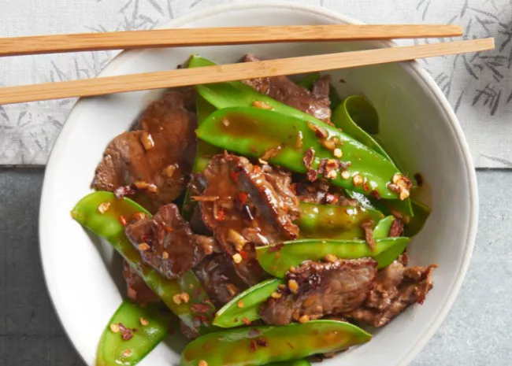

Asian Beef with Snow Peas
Back to home

Our beautiful, finished asian beef with snow peas dish!
I do think I've actually had asian beef, but I don't think I had it with snow peas. There was a while where I was babysitting for a family where the mom was from a Korean family, and they often let me eat their leftovers, and the beef she made was incredible. Not sure if this is even remotely the same.
Ingredients:
- 3 tablespoons soy sauce
- 2 tablespoons rice wine
- 1 tablespoon brown sugar
- ½ teaspoon cornstarch
- 1 tablespoon vegetable oil
- 1 tablespoon minced fresh ginger root
- 1 tablespoon minced garlic
- 1 pound beef round steak, cut into thin strips
- 8 ounces snow peas
Steps:
- In a small bowl, combine the soy sauce, rice wine, brown sugar and cornstarch. Set aside.
- Heat oil in a wok or skillet over medium high heat. Stir-fry ginger and garlic for 30 seconds. Add the steak and stir-fry for 2 minutes or until evenly browned. Add the snow peas and stir-fry for an additional 3 minutes. Add the soy sauce mixture, bring to a boil, stirring constantly. Lower heat and simmer until the sauce is thick and smooth. Serve immediately.
And that's it! Enjoy!